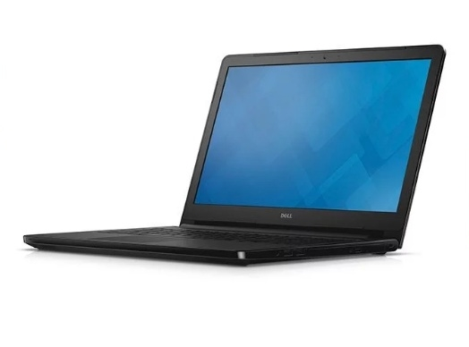
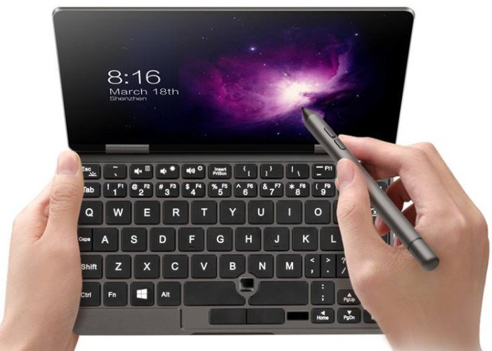
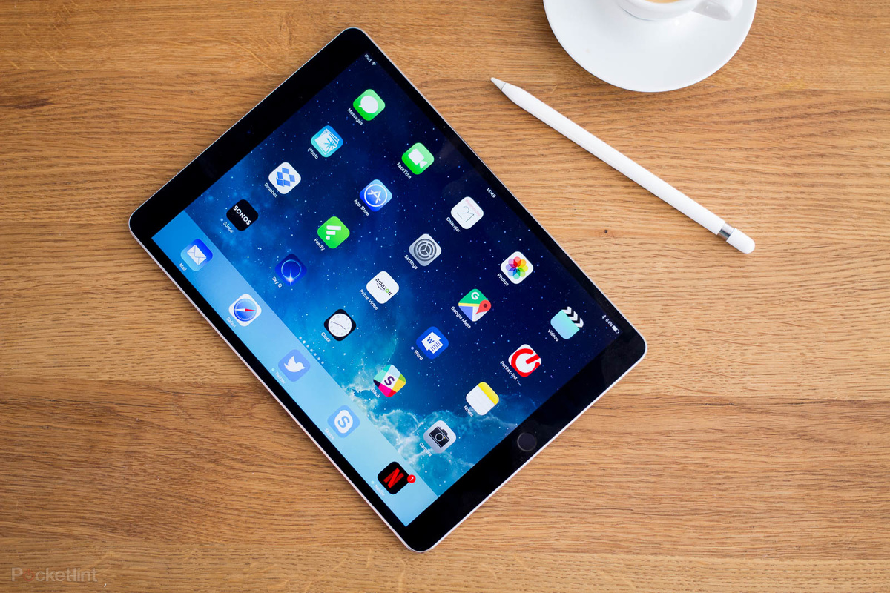
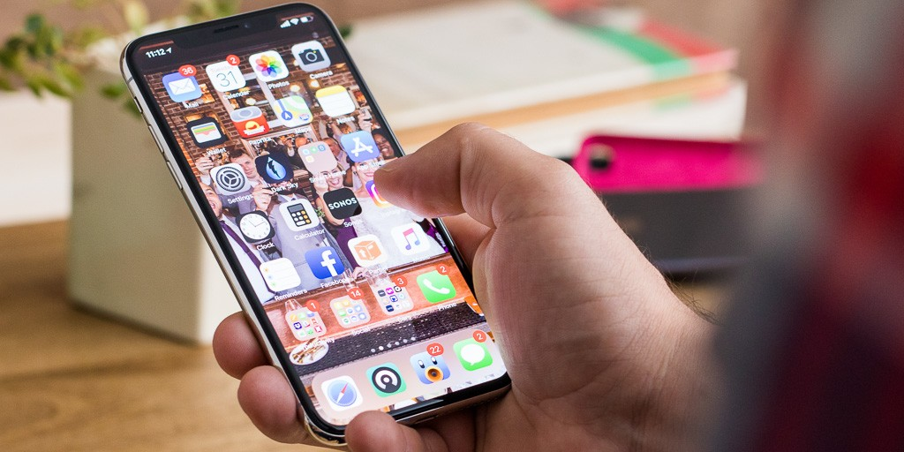
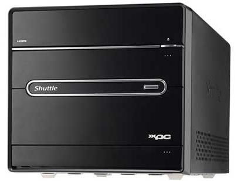
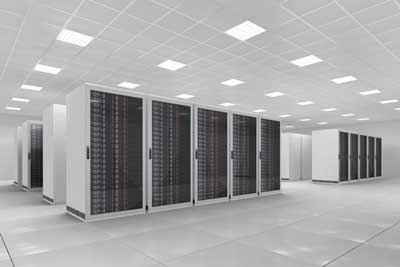
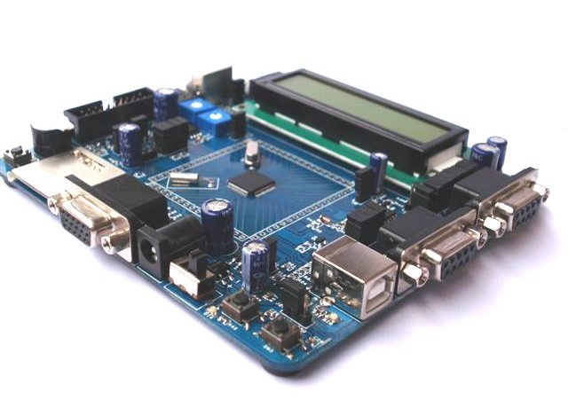

Computer Architecture
Types of computers and their uses.
There are many types and shapes of computers, these types can
be classified by there basic design in two classifications:
- Portable, such as:
- LAPTOP: is a battery or AC-powered personal computer that can be easily
carried and used in a variety of locations. Many laptops are designed to
have all of the functionality of a desktop computer, whichmeans they can
generally run the same software and open the same types of files. However,
some laptops, such as netbooks, sacrifice some functionality in order to be
even more portable.

- Netbook: is a type of laptop that is designed to be even more portable.
Netbooks are often cheaper than laptops or desktops. They are generally less
powerful than other types of computers, but they provide enough power for
email and internet access, which is where the name "netbook" comes from.

- Tablets: Like laptops, tablet computers are designed to be portable.
However, they provide a very different computing experience. The most
obvious difference is that tablet computers don't have keyboards or touchpads.
Instead, the entire screen is touch-sensitive, allowing you to type on a virtual
keyboard and use your finger as a mouse pointer. Tablet computers are mostly
designed for consuming media, and they are optimized for tasks like web
browsing, watching videos, reading e-books, and playing games. For many
people, a "regular" computer like a desktop or laptop is still needed in order
to use some programs. However, the convenience of a tablet computer means
that it may be ideal as a second computer.

- Smartphones: is a powerful mobile phone that is designed to run a variety
of applications in addition to phone service. They are basically small
tablet computers, and they can be used for web browsing, watching videos,
reading e-books, playing games and more.

- Stationary, such as:
- Personal computer: A small, single-user computer based on a microprocessor. In addition to
the microprocessor, a personal computer has a keyboard for entering data,
a monitor for displaying information, and a storage device for saving data.

- Workstation: A powerful, single-user computer. A workstation is like a personal
computer, but it has a more powerful microprocessor and a higher-quality
monitor.

- Minicomputer: A multi-user computer capable of supporting from 10 to hundreds of
users simultaneously.

- Mainframe: A powerful multi-user computer capable of supporting many hundreds
or thousands of users simultaneously.

- Supercomputer: An extremely fast computer that can perform hundreds of millions
of instructions per second.

- Embedded: Specially designed computer chip that resides in another device.
Self-contained computer devices performing dedicated functions.2 & 3
